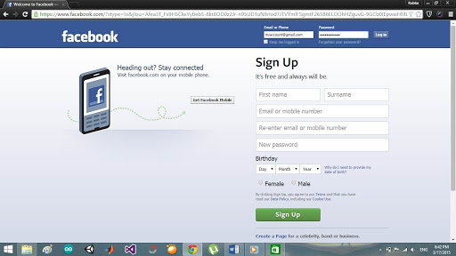

У 2015 році Соціальна Мережа став другим за відвідуваністю сайтом в світі.
Марк Цукерберг - наймолодший мільярдер
У тому ж році Марк Цукерберг - наймолодшим доларовим мільярдером з
офіційною зарплатою в 1 долар. Програміст завоював титули
найвпливовішої людини на планеті і надуспішного бізнесмена
до 40 років.

Дизайн соц. мережі в 2015 році
Скандал з Facebook
Компанію Cambridge Analitica звинуватили в тому, що вона втручалася у вибори по всьому світу,
крадучи в соцмережах персональні дані потенційних виборців і маніпулюючи їхньою думкою за допомогою інформаційних технологій.
Значна частина даних була отримана Cambridge Analitica від компанії Facebook.
Допрос в Сенаті
Однак на допиті в Сенаті Марк Цукерберг підкреслив, що вважає
Facebook безпечним, він акцентував увагу над контролем
користувачів над інформацією.
Виступ Марка в сенаті
Наслідки скандалу
Ці розслідування привели до падіння акцій Facebook на 4,4%,
який сприяв витоку даних 50 мільйонів американців. Аналітики вважають, що працівники Facebook знали про незаконну
передачі даних. Також був відсторонений від роботи глава компанії Cambridge
Analytica.
Особисте життя Марка
Марк Цукерберг познайомився з майбутньою дружиною Присциллой Чен ще на
другому курсі Гарварда. Стосунки пари пройшли випробування часом, бо
тільки в 2010 році Марк запропонував своїй майбутній дружині переїхати до нього в
Пало-Альто. Дівчина відповіла згодою і 19 травня 2012 року вони
одружилися.
Марк Цукерберг з дружиною Присциллой
Закінчення університету
В травні 2017 року мільярдер отримав диплом і почесний ступінь доктора
юриспруденції Гарварда. Через роки Марк Цукерберг повернувся в
університет, щоб виголосити промову випускника і отримати диплом. на
церемонії були присутні батьки і дружина творця Facebook.
Новий рекорд соц. мережі
У червні 2017 року Марк Цукерберг заявив про новий рекорд: число акаунтів
в Facebook досягло двох мільярдів.
Стан Марка Цукерберга
Стан 35-річного Марка Цукерберга на кінець 2019 - 69,4 мільярда
доларів. Це дозволяє програмісту розташуватися на 5 сходинці рейтингу
найбагатших людей світу.